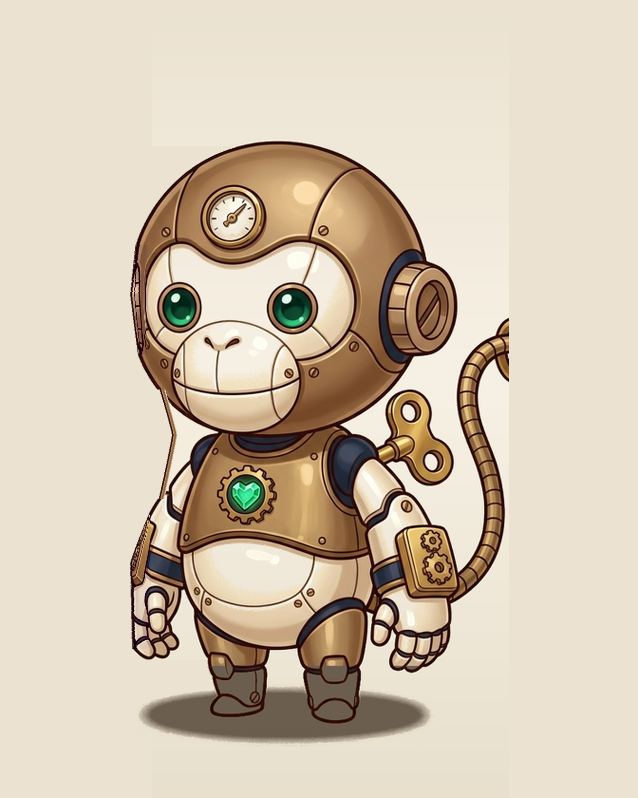
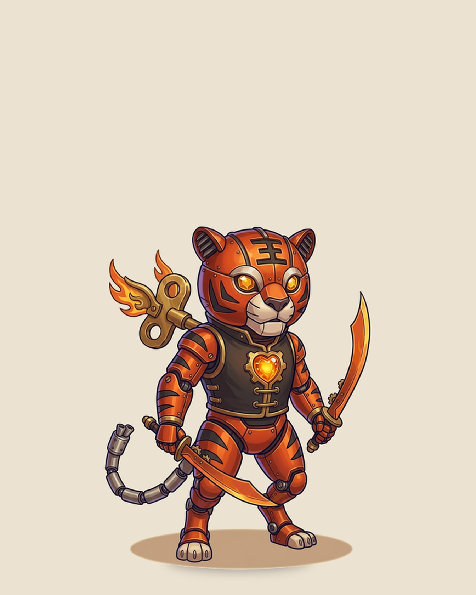
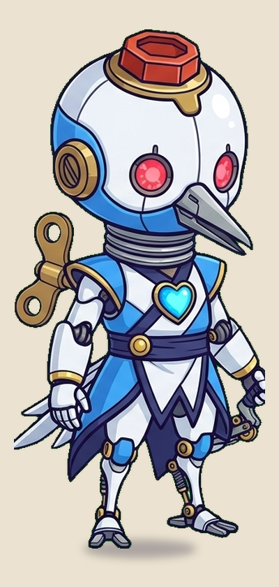
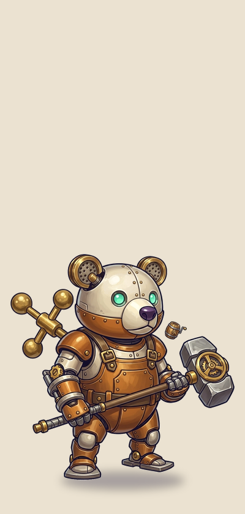
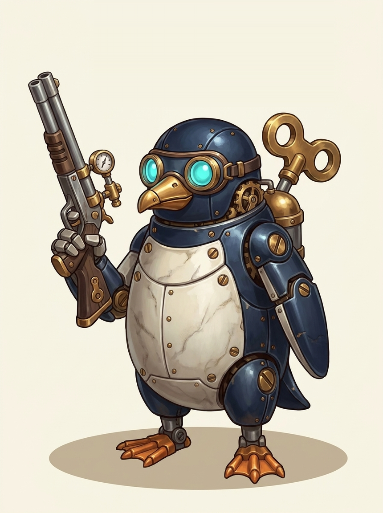

15
發條當體力
攻擊、閃避、招式都吃 15 點發條。用完就得停，節奏自己抓。

角色
2.2 頭身金屬玩具世界。零毛皮、背上有黃銅發條鑰匙。開局可從九大發條種族擇一，代表角色為白金兔「小白」，烈鬃獅、靈尾狐、鋼牙豕等皆為開局可選種族。

米白金屬板件、胸口青綠核心、立耳。長耳聽得到機關卡死的聲音，用來鎖定該拆的部位。


九大發條種族
2.2 頭身金屬機械玩具世界。零毛皮、全金屬板件與黃銅發條鑰匙，九大種族全數具備專屬武裝體系與外裝塗裝：
武器：單手長劍
先行者小白經典族系，中央大鐘的時間守護者，長耳鎖定機關卡死弱點。
武器：騎士長槍
黃銅都市發條樞紐守護者，胡桃鉗皇家近衛儀隊之首，身披皇家重裝板件。
武器：星軸法杖
星象觀測台與發條藤蔓守護者，專精十四主星軸共鳴秘術與懸浮連桿星軸長尾。
武器：鎢鋼巨錘
耐熱高溫鍛爐的重裝工兵，外露鎢鋼長獠牙與履帶紋底盤，專克泰坦巨型裝甲。

武器：機關發條靈爪護手
演武場東方武道機關玩具，以長臂彈簧避震套管與機關銅爪見長的靈動武者。

武器：齒輪發條雙斬刃
赤焰熔爐耐火試驗工坊淬火玩具，幾何排氣狹縫板件，以高速暴擊雙刃見長。

武器：風弦羽翼機關弓
通體冷淬青瓷琺瑯與折疊合金羽翼，以超視距風弦機關弓與穿甲狙擊見長的巡守者。

武器：玄軸偏心重力錘
赤焰熔爐黑曜石淬火神壇的沉穩巨靈，焦糖琥珀漆壓鑄鋼板，以偏心離心巨錘見長。

武器：蒸氣雙管導航火槍
水下發條宮殿深海導航員，耐壓鍍鈦深藍琺瑯，以背部蒸氣鍋爐與雙管火槍見長。
短片
主視覺短片。
發條轉動、推門、點題。